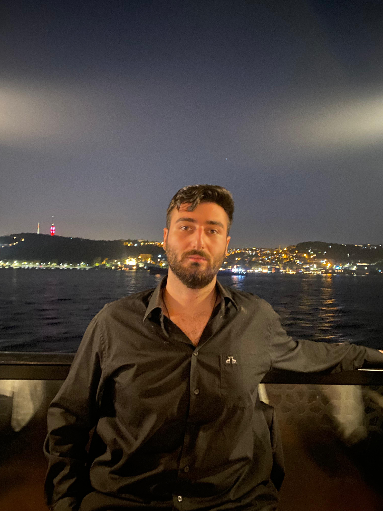

Deep Learning | Signal Processing | Software Engineering

As a dedicated Electronics and Communication Engineer and ITU alumnus, I possess a robust technical foundation in Deep Learning, Signal Processing, and Information Theory backed by over 2 years of full-time professional experience. I excel in developing and deploying scalable AI models while integrating DevOps and Software Engineering best practices into the development lifecycle. My technical expertise spans across Python and React enabling me to build end-to-end intelligent solutions from backend architecture to dynamic frontends. I bring a multicultural and innovative approach to every project supported by my fluency in English (C1) and proficiency in German (A2) always focusing on the intersection of academic theory and practical software implementation.